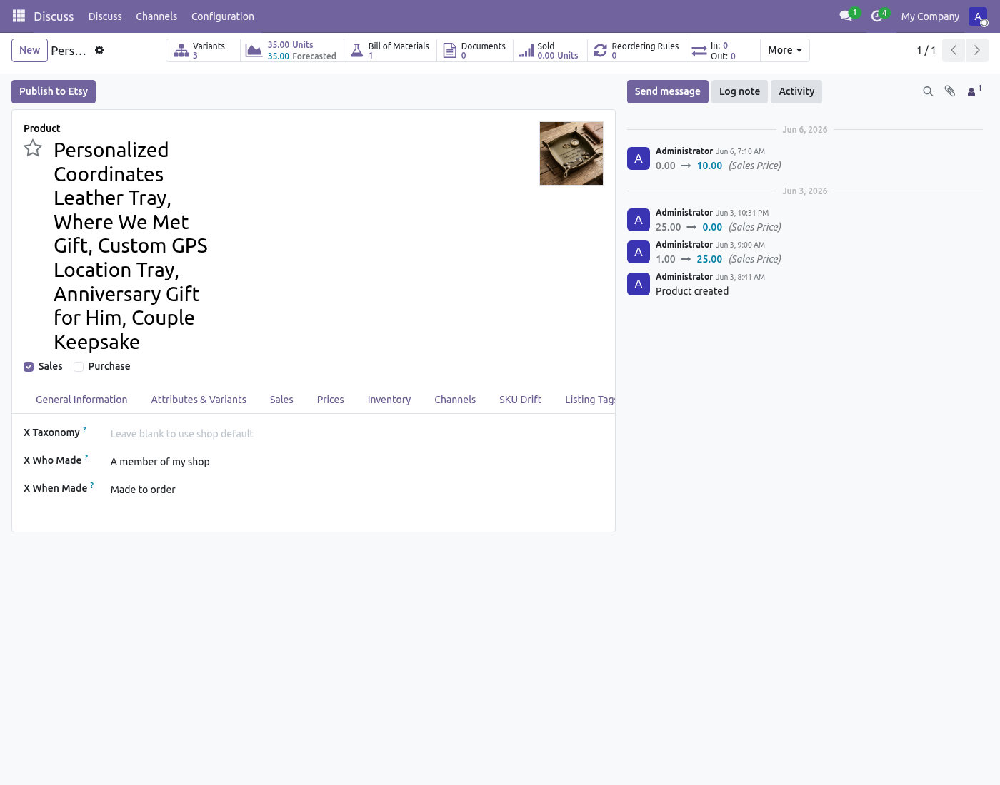
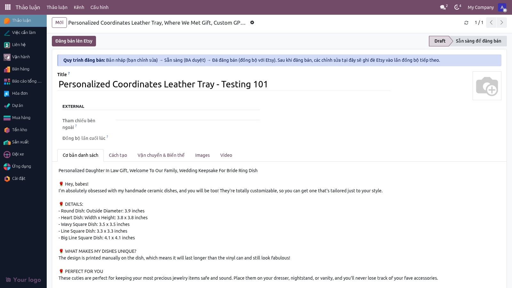
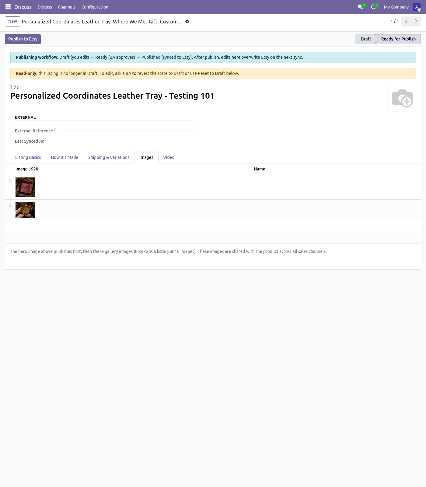
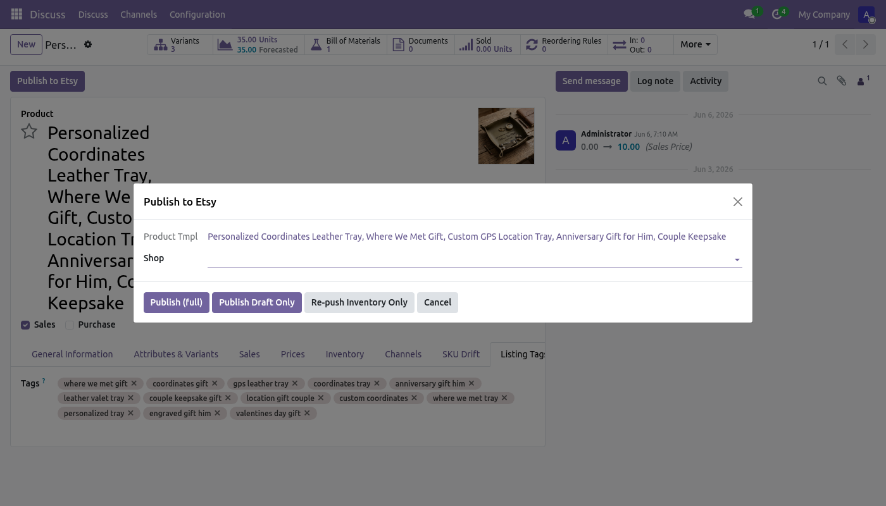
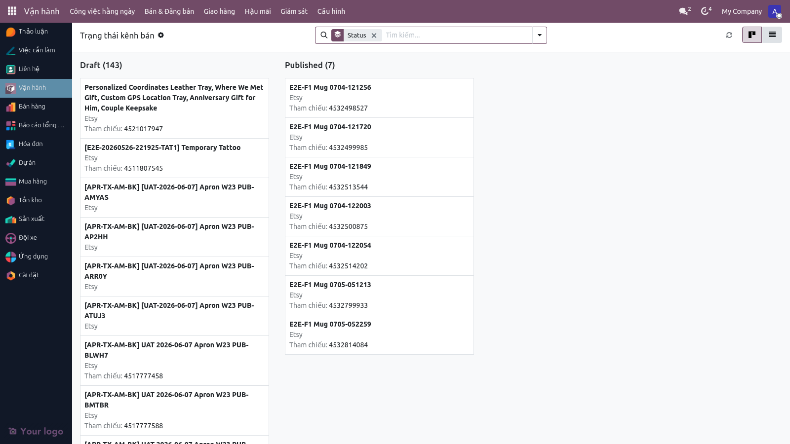
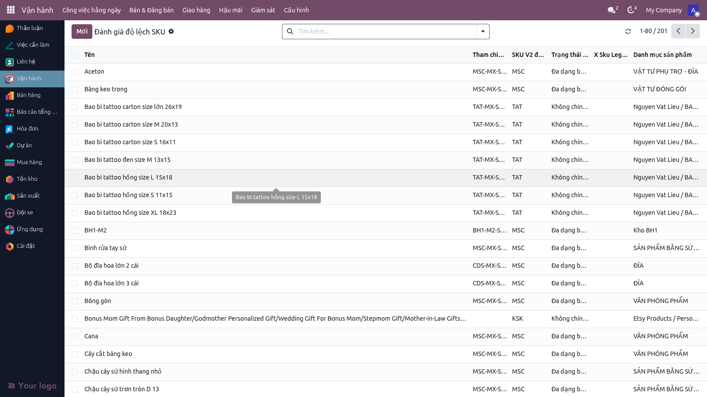

Từ ý tưởng thiết kế đến listing sống trên shop Etsy. Marketing hoặc BA điền form Sản phẩm chuẩn, chọn Danh mục + Biến thể, hệ thống tự sinh Mã SKU. Bấm Publish, hệ thống gửi metadata lên Etsy API. Listing xuất hiện ở trạng thái Draft hoặc Published.
Hoàn tấtĐọc ~12 phút
ASơ đồ vai trò (Swimlane)
Marketing
Hệ thống Odoo
Etsy API
Bước 1
Tạo sản phẩm
Lưu form + sinh SKU
Bước 2
Cấu hình kênh Etsy
Bước 3
Bấm Publish to Etsy
Tạo listing + upload ảnh
Nhận createListing, trả listing_id
Kết quả
Listing state = published
Draft listing trên Etsy
Bước 1 — Tạo sản phẩm
Menu: Vận hành ▸ Bán ▸ Sản phẩm & SKU Vai trò: Marketing, BA Lead
Người dùng điền các trường cơ bản trên form sản phẩm:
Tên sản phẩm (Name)
Danh mục (Category) — tự động sinh SKU theo dạng: [Category-Code]-[Category-Name]-[Tạo sản phẩm SKU Drift Badge
Form tạo sản phẩm — Tiêu đề và tên sản phẩm. Hệ thống tự sinh SKU dựa trên danh mục.
Bước 2 — Cấu hình kênh Etsy
Tab: Channel Applicability Vai trò: Marketing
Chọn kênh "Etsy" để sản phẩm này được phép đăng bán trên Etsy. Đặt giá danh sách (List Price) bằng VND cho shop JaHandmadeArt.

Tab Listing Defaults — Chọn kênh Etsy và đặt giá VND.
Bước 3 — Thêm ảnh, giá, và thuộc tính Etsy
Menu: Vận hành ▸ Bán ▸ Đăng bán Etsy → chọn sản phẩm → Tab "Shipping & Variations" hoặc "How It's Made"
Khi lưu sản phẩm, hệ thống tự tạo listing record với default từ shop (Taxonomy ID, Shipping Profile, Who Made, When Made). Bạn có thể override per-listing nếu cần khác:

Form listing Etsy trên Odoo — Các tab: Basics, How It's Made, Images, Shipping, Video.

Tab Images — Tải ảnh từ gallery sản phẩm (hệ thống tự lấy từ Product Template).
Bước 4 — Publish to Etsy
Nút: Trên form sản phẩm hoặc listing → "Publish to Etsy" hoặc "Yêu cầu báo giá"
Bấm nút "Publish to Etsy" để đẩy listing lên Etsy API. Wizard hiện ra — chọn shop → "Run Publish Draft Only". Hệ thống gửi tất cả metadata, ảnh, và thuộc tính lên Etsy.

Wizard Publish to Etsy — Chọn shop, sau đó "Run Publish Draft Only" hoặc "Publish Immediately".
Bước 5 — Theo dõi trạng thái kênh
Menu: Vận hành ▸ Bán ▸ Trạng thái kênh (Channel Status Kanban)
Sau khi publish, sản phẩm xuất hiện trên Kanban board theo trạng thái kênh: Draft, Published, Inactive. Bạn có thể kéo-thả giữa các cột để thay đổi trạng thái nếu cần. Nếu có lỗi đẩy lên Etsy, sản phẩm sẽ hiển thị cảnh báo màu đỏ.

Kanban Board — Trạng thái kênh: Draft, Published, Inactive. Kéo-thả để thay đổi trạng thái.
Bước 6 — Kiểm tra SKU Drift
Menu: Vận hành ▸ Giám sát ▸ [Dành cho RD] SKU Drift Alerts
Nếu sản phẩm được tạo lại hoặc danh mục thay đổi, SKU có thể bị dịch (drift). Bảng cảnh báo SKU Drift giúp RD phát hiện và khác phục:

SKU Drift Detector — RD theo dõi các SKU đã thay đổi và quyết định hành động (merge, update, hoặc chấp nhận).
iGhi chú cho Marketing & BA
SKU được sinh tự động. Bạn không cần điền SKU thủ công. Hệ thống lấy mã danh mục (ví dụ "TST" cho T-shirt) + tên, sau đó sinh SKU duy nhất.
Etsy API cấp quyền cho 4 scope. Mỗi scope cho phép hành động khác (tạo listing, cập nhật giá, xoá listing, v.v.). Nếu gặp lỗi 403 Unauthorized, liên hệ Quản trị viên để re-authorize OAuth.
Publish có hai chế độ: Draft (có thể chỉnh sửa trên Etsy) hoặc Published (bán ngay). Hầu hết quy trình dùng Draft để QC trước khi bán.
Metadata Etsy (Taxonomy, Shipping Profile, Who Made). Các default được set ở Etsy > Cửa hàng > [shop] > Publisher Defaults. Bạn có thể override per-listing hoặc per-product.